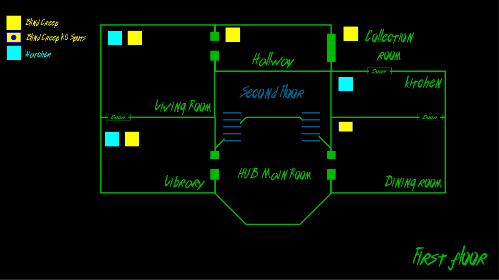
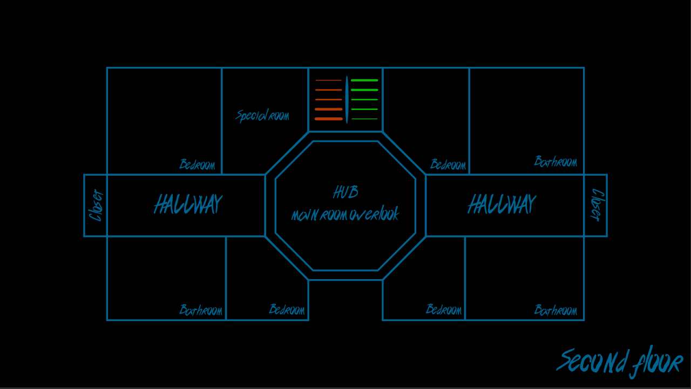
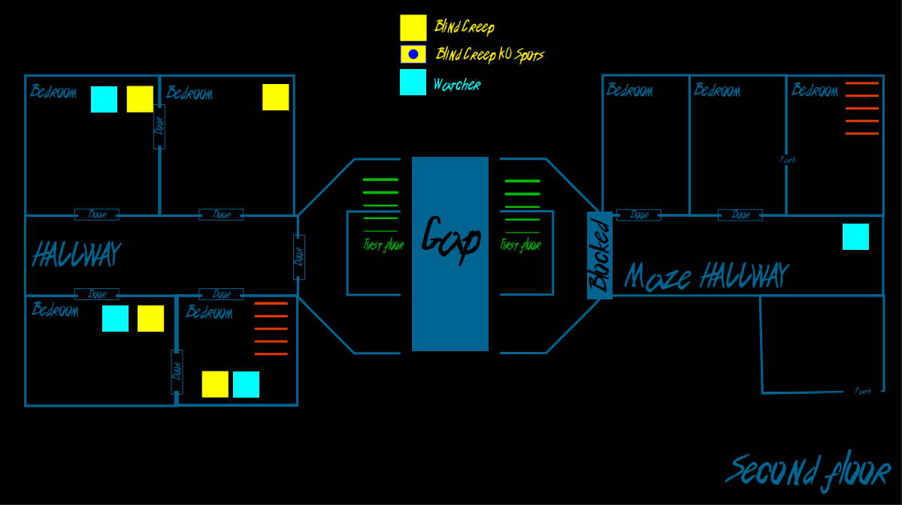
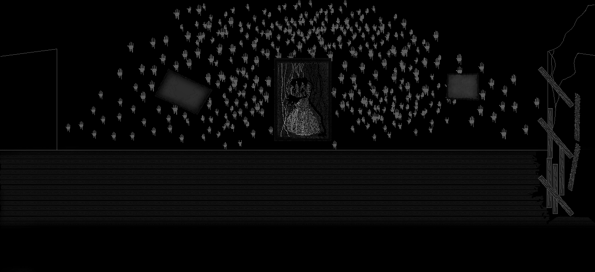
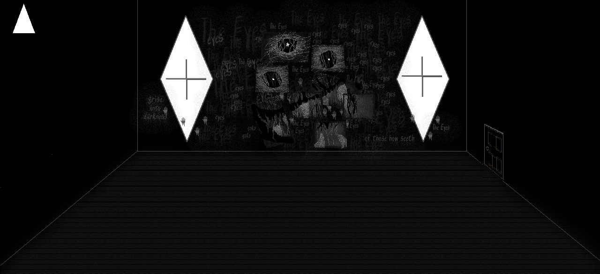
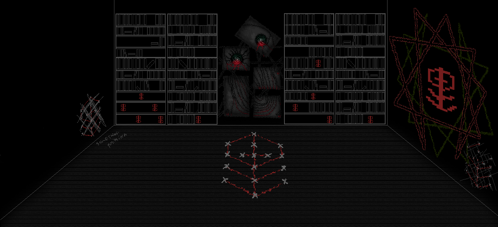

Game Developer Portfolio
3 O'clock Horror Development Process
About the game: 3 O’clock horror is a short escape the room inspired experience that takes a lot of inspiration from other horror games like Resident Evil and Faith, as well as Lovecraftian tales to make a single short horror experience that can be easily replayed to achieve different endings. This game has a total of 3 endings and a full Mansion to explore with 3 enemies that will “wake up” at different times during the exploration of the Mansion. Like many other horror games, some of the story is told by notes and messages left behind in the Mansion walls.
Overview: In this development process document, I will describe, in topics, the changes that lead to a better design and game overall. For the sake of simplicity, I will only list a few things that I have worked and implemented myself instead of all the things I’ve done in the game. This is a simple showcase of how I design and develop solutions.
This page will cover the following topics:
- Puzzles Design
- Level Design and game flow
- Narrative System and Storytelling
- Room's background, items, and decoration art
- UI changes for mobile, and inventory re-work
- Being a team Lead

Info:
Link: Steam Page
Platforms: PC, Android
Project Length: 6 months (PC), additional 3 months (Android)
Engine, Tools, and Language: Unity, Adobe Suite, GitHub, Trello, C# Visual Studio
Puzzles Design
The base design of all the puzzles was created following a few rules to make sure they would fit the game theme and aesthetic.
The basic design rules:
- Engaging: A puzzle that is too easy to solve can give progress, however, it is not satisfying to solve
- Solvable in a timely manner:A puzzle that is frustrating and/or time-consuming can jeopardize the experience for the player halting the progress
- Incorporate exploration in its design either before or after the completion of the puzzle: This ensures that the monsters in the mansion will interact with the player
- Give the player progress in the game, moving the story and adventure forward
- Randomized or with different answers: For the sake of Replayability the puzzles need to be random within the bounds of the puzzle, or have more than one answers that can be utilized in different runs
- Tie to the story of the Mansion owner or the curse that is in the mansion

The game has a total of 4 different puzzles in the mansion:
The Photo Puzzle
is 1 of 2 possible puzzles that the player could find first in the mansion. The goal of the photo puzzle is to encourage exploration and to guide the player to the next puzzle. Photos with a roman numeral and a specific year are spread around the first floor of the mansion. Once the player finds the photo frame, the collection of photos can be put together in chronological order revealing a sequence of four roman numerals. Those same roman numerals will reappear once the player tries to make progress to the second floor and find a lock with roman numerals as well. After plugging the roman numerals, the player will be granted access to the next puzzle area.

Collecting photos and arranging them at the photo frame
Randomness is implemented on the roman numerals, those numbers will always be randomized every time the game starts, so fetching the photos is a necessary step, allowing the game developers to plan future events based on time.
This puzzle connects with the narrative by showing that the owner of this mansion has previously visited other places in an information quest to help him understand something mysterious that has been happening. The story so far is only supposed to be vague and simple, without giving away too much information but keeping the playe intrigued. The player is invited to explore more to further understand what happened to the mansion and the owner.

Opening lock with roman numerals after solving the photo puzzle
The coin puzzle
is next up in line after the photo puzzle. The player is invited to find 4 coins to fit in a coin box. Those coins can be found on the second floor, and the second floor only. The goal of these puzzles is to not force the player to go back to an area that has already been explored to fetch more items. The idea behind the second floor is to introduce the second monster of the mansion, which comes out at 7 pm and will hunt the player on the second floor. Since the game is rewarding fast play and Replayability, those who manage to solve the Photo Puzzle faster can enter this area before 7 pm making the exploration easier.

Coin Puzzle table
Similar to the photo puzzle the addition to the narrative that this puzzle provides is based on the owner of the mansion and his travels, driving the point home that whatever is happening here might have been brought by him from somewhere else. Once all the coins have been collected, the player is greeted with a table that has a magnate at the bottom and a box with the coins on top. The box can be turned around in any direction, but the coins will always go towards the magnet. The goal of the puzzle is to match the coins animal with the animal drawing engraved in the box. To incorporate randomness, we designed 3 different puzzles with different locations for the coins to be landed on. Those puzzles are loaded once the player interacts with the table with all 4 coins and they are all in different difficulty levels, from easy to hard.

Coin Puzzle solved
The player is rewarded with a piece of the broken ladder after the puzzle is complete. That item can be fixed with just another piece of the broken ladder that can be found while exploring the second floor. Since the player has already explored the second floor to find the coins, it is likely for the player to already have the other piece. The fixed ladder then gives the player access to the last puzzle on that side of the house.

Fixin broken ladder (combining items)
The Skull puzzle
is the last puzzle on the left side of the house and the most complex to solve because of the constant testing that is required to complete it on top of its challenges. The puzzle has the simple premise of turning all 4 skulls to the right position to be completed, but the player must follow a sequence of riddles to determine the positions they should all be at. Every skull has a certain pattern that can move itself or other skulls at the same time requiring the player’s attention to what specific movements are happening at every skull turn.

Skull Puzzle, solving first riddle
After completing 3 riddles, the player will be guided to the library to then be given the option to leave the mansion and complete one of the endings.

Left side ending, diamond found
The Red Book
introduces a new interesting mechanic that ties with the curse of the house and entices the player to explore the symbols that are around the right side of the Mansion to open the sealed basement door.
The book gives the player a little introduction to how it works the first time you open it. One of the symbols is given away when the player first opens the book. That is to invite the player to complete the process of inputting a symbol and to notice that more symbols need to be found.
After successfully drawing a symbol, the progress can be seen by the basement door as lights show how many the player has gotten and how many are left to be found.
The red book puzzle was one of the only puzzles that would break the rule of not applying randomness to its design and the reason comes from playtesting. As we saw players trying the game, again and again, having a static image of the symbols helped the player create a better sense of progress since the symbols were not simple to remember. Taking away that sense of progression on a puzzle that already seems to take a lot of time to be solved did not seem fair for players, making them lose interest and not follow that puzzle line or quit the game.

The Red Book
Level Design and game flow
The turorial:
The first thing that the player will see when booting the game is a simple tutorial room before entering the house. The tutorial will cover the basics of exploration, how to use the inventory, how to use the light mechanic, how to read notes, and how to interact with puzzles with your mouse. After completing the tutorial, the player is welcomed to the title screen which is the door before entering the mansion. For the players that are acquainted with the game, they can press escape and a menu will give them the option to skip the tutorial and go straight for the main menu.

Tutorial scene
First Mansion Map design and reworks:
The first map design was a sketch of what the team and I thought could work well with our prototype and the puzzles that we designed. Since we wanted the first floor to be welcoming and exploration-forward, we did not put any type of roadblocks on that floor for the first in-game hour. That was plenty of time for the player to get used to the first floor and get hooked on one of the available puzzles while exploring more.
Map redesign:
The main story has 3 different endings, we wanted to represent that in the level design by hinting at the directions that the player could take to complete the game. To make this clearer we divided the mansion down the middle making it left and right progression flows. Whit this new design the first floor would connect the left and the right side of the mansion, separating the puzzles and possible endings that can be met in the mansion.
The previous puzzles described in this document, photo puzzle, coin puzzle, and skull puzzle, are all found on the left side of the mansion. While the right side has one puzzle that requires a lot more time exploring involving way more jump scares and exposure to the narrative.
The third ending was designed to be a combination of both endings, closing the story with a true ending for the players that invested the time and figured out the connection between the two sides of the mansion. The third ending is achieved by completing one of the sides first and then continuing to the other side of the mansion and completing all the puzzles on that side as well. From the beginning the goal of the game was to make players re-play the game, giving a sense of a rogue-like progression, where the knowledge of the previous run would allow the player to make more progress faster. With that previous knowledge, the third ending could be completed before time ran out in-game.
Floor 1 version 1
Floor 1 version 3
Floor 2 version 1
Floor 2 version 3
Narrative System and Storytelling
The Base game was designed to have a status notification progress to let the player know what has been completed and where to go next. However, during playtest, most of our players seemed disconnected from what was happening in the story during the game. Along with that they did not know where to go and what to do next. For that reason, I decided to rethink how the game approaches narrative and design a support system for our notification system.
3 O’clock Horror narrative draws inspiration from Lovecraftian tales, where the main character is telling the story of something horrific that happened to him in the past or will happen in the near future. I wanted to give that same experience to the player by making the main character write the story of what happened on the night he went to the mansion and have the gameplay be a memory in real-time. That gave me an idea to implement a new narrative system that will update the player on the current time, how much time is left, what is happening in the mansion, where to go next, hits, and other fun little things when the player gets a jump scare.
I designed that system to be easily implemented and to create different messages for different scenarios in the same puzzle or progression lock notifications.
This narrative system was implemented for the whole game and added a lot more to the main character’s narrative and empathize the style of the game.
Photo Puzzle Example

If the player had found only a few photos, the message will print like this

If the player arrives without any photos the message will print like this
In the scenario of the player arriving at the location with all the photos and solving the puzzle, the previous messages will never play.
Room's background, items, and decoration art
During the game, I also provided the background images for all of the rooms. The goal of the rooms was to mainly create a playground for game designers to set traps and lay interesting information in the game. My goal with the room was to set interesting images on walls and windows that could be used to create an atmosphere and improve the narrative of the game.
I also helped with a few items that are present in the game, such as the pocket watch, coins from the coin puzzle, the mask for one of the monsters, and a few ending graphics.
All images were made in photoshop to help create a specific style of pixelated art.
If you are interested, check out the link for the Pinterest folder we used in development to draw inspiration for 3 O’clock horror.
First floor back hallway
Second Floor room
Third floor study room
UI changes for mobile, and inventory re-work
After completing the game for PC, I decided to pick the project again, this time by myself, to release it for mobile and retouch a few things that I thought could be better in the game.
First, I wanted to do included a new interaction system based on trigger 2D, allowing multiple actions to happen at once, giving me more freedom to manipulate certain items that should go to the player and messages that should play in the narrative system. That new trigger system replaced an outdated loop that would compare the distance of the player and the distance of the object. Replacing that loop was a great way to improve performance, something that was necessary now that my target platform was the phone.
New system taking 3 intro action when triggered and 3 exit actions when the player leaves the trigger
The biggest change in the game was made in the UI and the input system.
The previous input system required a lot of different buttons on the keyboard to work. Those same buttons would not translate well on the phone, so a new solution would have to be designed for mobile. The best solution I have come up with was a single interact button that shows up on the screen whenever the option to interact with an object is available. Similarly, that button would hide offscreen once the player decides to walk away from the object. That solution did not crowd the space and made the UI cleaner and easier to use.

New input system and UI
The camera was moved closer to the player following him instead of being locked in one position for every room. Having a closer look at the map improved the atmosphere and the anxiety caused by certain monsters that roam around the mansion. Now, these monsters are “hidden” in the environment making it harder for the player to easily pinpoint their position, improving the horror factor.

Old Camera view

New Camera view
That same design was used for the inventory UI that no longer requires the player to press a button to open the inventory. Just by getting closer to a container, that container inventory would load, and the UI drops down from the screen assuming that the player wanted to interact with it.
With the new replacement of the inventory UI, the background code that was used to run the inventory was replaced by the new inventory system based on triggers. The new inventory system subscribes to a script that listens to the container’s inventory and the player’s inventory. Once the player is in range of the trigger, the scripts listening will send their available items to be populated in the UI. If the player decided to pick up the item, a single click updates the list of items from the container to the player, and also the UI will now show the item in the player’s inventory and take it out of the container’s inventory.

Old inventory

New inventory
Being a team Lead
It was a great experience to be a lead designer for this project. I still have a lot to learn to be a great leader, but I hope to achieve that one experience at a time. Some of the things I have learned and done as project lead are:
- Creating effective team meetings with AGILE methodology
- Making Road Map and Gantt Chart
- Using software for organization and version control, such as Trello, Github, OneNote, Pinterest
- Listening to constant feedback and applying it in the game
- Managing weekly tasks from each team member, including my own
- Adapting to unpredictable bugs and changes in schedule
- Bonding with team members to understand their goals and aspirations to help them mold the project that they would like to build
- Fast and constant communication to avoid misunderstanding and loss of precious production time
- Shift responsibilities between available team members in case of someone leaving or being sick
- Try to keep high morale whenever possible
Research presentation about the game at Dakota State University